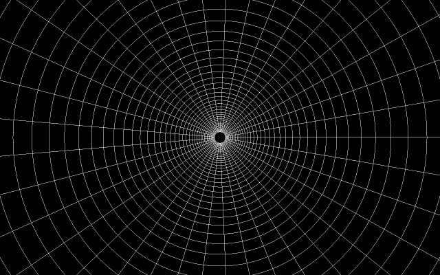

Anyone who has ever ran a simulation of the common spacetime diagram of gravity where planets appear on a elastic sheet knows that it is not an optimal representation of what is actually going on: the spheres on the sheet do not neatly revolve around eachother but rather quickly crash together.
What does the diagram really represent? In places of greater mass the sheet is lower, since mass warps spacetime the depth indicates how much spacetime has been pulled together: Volume around a heavy object is contracted, for a box to contain the same amount of volume while moving down the sheet it has to become relatively smaller.
Each box contains an equal area, in other words each circle is a straight line. This effect also explains why no object traveling at finite speed can return from the horizon of a black hole: it would have to travel an infinite distance.
Updated on 2020-07-27.